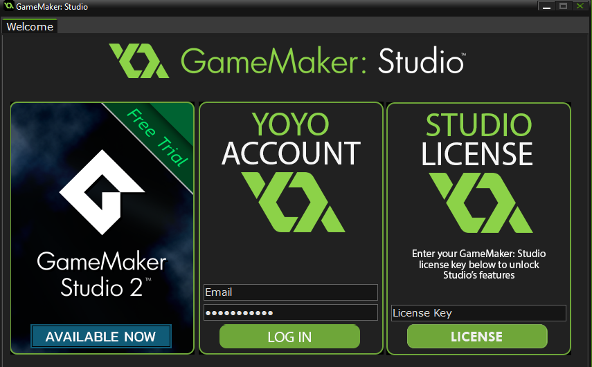

하지만, 여러 플랫폼으로 익스포트하려면 플랫폼별로 모듈을 구매해야 한다.
기존 버전에 비하면 훨씬 비싸지만, 별로 어렵잖게 다양한 플랫폼으로 어플리케이션을 익스포트할 수 있다는 것이 강점이다

yoyo계정을 이용하여 모든 게임 제작 요구사항에 대해 단일 로그인을 지원한다.
게임을 만들때 함수를 따로 익히지 않아도 액션을 이용해 직관적으로 게임을 개발할 수 있다는 점에서 다른 다양한 게임 개발 툴을 접하기 전에 연습삼아 익히기에 적합한 프로그램이다.
통합 자습서도 마련되어 있어 학습자료를 작업공간에 직접 도킹시킬 수도 있다.

랩탑pc로 개발하는 모든 사용자에게 개발 과정에서 발생하지 않는 효율적인 워크 플로우가 마련되어 있다
2017 버젼이후 영구 라이센스는 없어졌으나 개인 라이센스는 여전히 무료로 유지하고 있으며, 연매출 20만불 이하일 경우 월 40,000원대, 그 이상은 140,000원 라이센스 비용을 받는다.
매출이 1억 이하일 경우는 무료 라이센스를 사용할 수 있다. 이는 각종 엔진들이 무료화 하는데 큰 영향을 끼쳤으며, 게임이 출시되더라도 별도의 라이센스 비용을 청구하지 않는다.
이는 개발의 민주화라는 모토와 맞물려 게임개발의 대중화 및 인디/소규모 개발팀이 많이 생겨나는 계기를 만들어 냈다.
이러한 장점들 덕분에 벤처 기업이나 소규모 스타트업 창업을 하는 사람들 입장에서는 굉장히 유용하게 사용할 수 있으며, 2D 기능역시 최신 기능들이 계속 추가되고 있기에 2D, 3D 모두 개발이 가능하다.
특히, 소규모/인디 개발에만 한정되던 초기와는 다르게 MMORPG까지 다양하게 확장하고 있는 추세이다.
국내 안드로이드 매출 50위 안의 30~50% 정도가 유니티로 개발되고 있으며, 장르역시 MMORPG에서 전략/퍼즐/액션까지 다양하게 개발되고 있다.